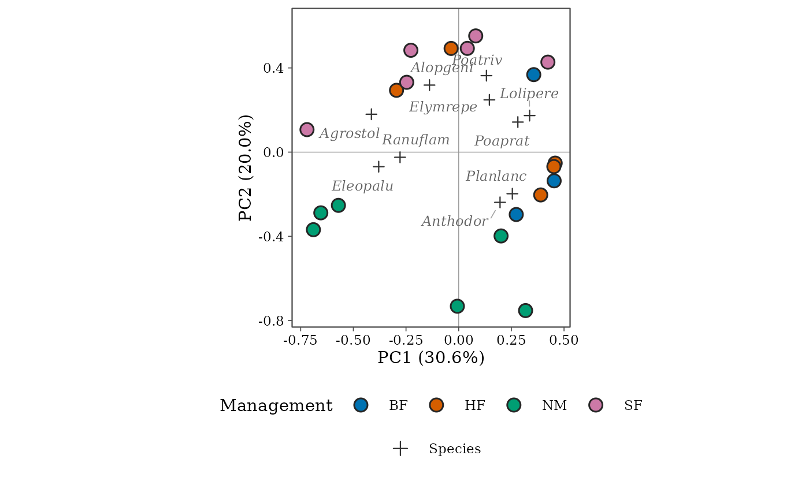

ord_style() sets the look of every element of an ordination diagram
drawn with autoplot(). The defaults follow the conventions of CANOCO 5
and vegan, tuned for print: filled site symbols with a thin outline
(legible in colour and in grey), small crosses for species with italic
names, heavier arrows for continuous environmental variables with bold
names, triangles for factor centroids and hairlines through the origin.
Change any argument; colours of site groups come from palette in
autoplot(), and further changes can be made by adding ggplot2 scales
and themes to the result.
Usage
ord_style(
font = "serif",
site_size = 3.4,
site_stroke = 0.8,
site_alpha = 1,
site_outline = "grey15",
site_fill = "white",
site_shapes = c(21, 24, 22, 23, 25),
site_label_colour = "grey10",
site_fontface = "bold",
species_colour = "grey45",
species_label_colour = "grey40",
species_shape = 3,
species_size = 1.9,
species_linewidth = 0.35,
species_fontface = "italic",
env_colour = "#1F78B4",
env_linewidth = 0.9,
env_fontface = "plain",
env_stats = TRUE,
path_colour = "grey60",
path_linewidth = 0.35,
centroid_shape = 17,
centroid_size = 3,
contour_colour = "#1B7837",
contour_linewidth = 0.45,
origin_colour = "grey60",
origin_linewidth = 0.25,
label_size = 2.8
)Arguments
- font
Font family of all text (
"serif","sans"or any installed family).- site_size, site_stroke, site_alpha
Size, outline width and opacity of site symbols.
- site_outline, site_fill
Outline colour of site symbols, and their fill when sites are not grouped.
- site_shapes
Filled symbols (21 to 25) used for site classes.
- site_label_colour
Colour of site labels.
- site_fontface
Font face of site labels.
- species_colour, species_label_colour
Colour of species symbols (or arrows) and of their names.
- species_shape, species_size
Symbol and size of species points.
- species_linewidth
Line width of species arrows (
species_arrows = TRUE).- species_fontface
Font face of species names (
"italic"for binomials).- env_colour, env_linewidth, env_fontface
Colour, arrow width and font face of environmental variables and centroids.
- env_stats
Add the fit of each environmental variable (r squared and p from
envfit) to its label.- path_colour, path_linewidth
Colour and width of the
pathline.- centroid_shape, centroid_size
Symbol and size of factor centroids.
- contour_colour, contour_linewidth
Colour and width of contours.
- origin_colour, origin_linewidth
Lines through the origin.
- label_size
Base size of labels (mm); variable labels are a little larger.
Value
A list for the style argument of autoplot().
Examples
data("dune", "dune.env", package = "vegan")
d <- community_long(cbind(site = rownames(dune), dune.env, dune),
cols = dplyr::all_of(names(dune))
)
o <- ord_fit(d, abundance = abundance, method = "pca", transform = "hellinger")
ggplot2::autoplot(o,
colour = Management,
style = ord_style(site_size = 3.5, species_colour = "grey20", label_size = 3.2)
)
